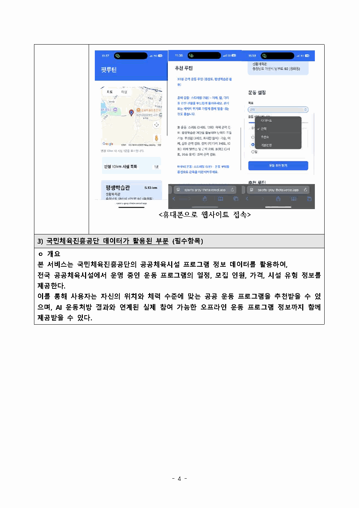

사용자는 운동 루틴을 정한 뒤에도 주변 시설을 따로 찾고, 이동 가능 거리와 프로그램을 다시 비교해야 했습니다.
사용자의 과제
내 위치에서 갈 수 있는 시설과 내 목표에 맞는 운동을 동시에 확인하기
서비스의 해법
위치 기반 시설 탐색과 조건 기반 루틴 추천을 한 화면에서 이어주기
운동을 결심한 사용자가 장소를 다시 검색하지 않도록, 현재 위치·공공체육시설·운동 조건·AI 코멘트를 하나의 앱 경험으로 연결했습니다.

제출 자료에 포함된 실제 실행 화면입니다. 지도에서 주변 시설을 찾고, 운동 조건을 선택한 뒤 추천 루틴을 확인하는 흐름이 한눈에 보이도록 크게 배치했습니다.

사용자는 운동 루틴을 정한 뒤에도 주변 시설을 따로 찾고, 이동 가능 거리와 프로그램을 다시 비교해야 했습니다.
내 위치에서 갈 수 있는 시설과 내 목표에 맞는 운동을 동시에 확인하기
위치 기반 시설 탐색과 조건 기반 루틴 추천을 한 화면에서 이어주기
권한 거부나 위치 확인 실패 상황에서도 서비스가 멈추지 않도록 기본 위치를 제공합니다.
사용자 위치와 시설 마커를 구분하고, 목록에서 선택한 시설을 파란 마커로 다시 강조합니다. 목록 선택 시 지도 중심도 함께 이동해 두 인터페이스가 같은 상태를 가리키게 했습니다.
공공체육시설 좌표를 불러온 뒤 Haversine 공식으로 사용자와 시설 사이의 거리를 계산합니다. 반경 안의 결과만 남기고 가까운 순서로 정렬합니다.
목표·시간·강도를 API에 전달하고 준비 운동, 본운동, 마무리 운동으로 구성된 루틴과 예상 소모 칼로리를 반환하도록 구성했습니다.
Gemini 응답의 마크다운 표식을 정리하고 문단을 분리했습니다. 칼로리와 시간 같은 핵심 수치는 시각적으로 강조해 긴 문장에서도 중요한 정보를 빠르게 찾도록 했습니다.
위치 권한이 없으면 종로구 중심 좌표를 사용하고, 지도·시설·AI 요청마다 별도의 안내 문구를 제공합니다.
JSON을 우선 사용하고 CSV를 대체 데이터로 읽도록 해 외부 API 없이도 시설 검색 흐름을 확인할 수 있게 했습니다.
지도, 시설 목록, 입력 폼, 추천 결과를 각각 만드는 것보다 중요한 것은 사용자가 어느 단계에서도 길을 잃지 않게 하는 일이었습니다. 비동기 데이터의 로딩과 실패 상황을 안내하고, 선택한 시설을 지도와 목록 양쪽에 반영하면서 여러 상태를 하나의 경험으로 동기화하는 방법을 배웠습니다.